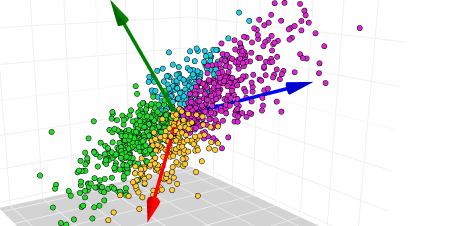

Submission: Submit the knitted Word document to Canvas.

(Image: towardsdatascience)
Example
In this example we will study the NBA dataset containign statistics for NBA games. The dataset is obtained from Kaggle
Linear Regression
We first run the linear model on the original dataset with the response being PTS and the predictors are the remaining variables.
library(tidyverse)library(factoextra)df =read_csv('games_details2.csv')model =lm(PTS~., data = df)summary(model)
Call:
lm(formula = PTS ~ ., data = df)
Residuals:
Min 1Q Median 3Q Max
-34.191 -3.332 -0.910 2.781 45.820
Coefficients: (1 not defined because of singularities)
Estimate Std. Error t value Pr(>|t|)
(Intercept) 1.6589505 0.0149513 110.957 < 2e-16 ***
FTA 1.1154196 0.0033741 330.579 < 2e-16 ***
FT_PCT 2.4973351 0.0214064 116.663 < 2e-16 ***
OREB 0.1849253 0.0058463 31.631 < 2e-16 ***
DREB 0.4298317 0.0032953 130.437 < 2e-16 ***
REB NA NA NA NA
AST 0.5200595 0.0034018 152.877 < 2e-16 ***
STL 0.6293577 0.0080194 78.480 < 2e-16 ***
BLK -0.0482374 0.0091286 -5.284 1.26e-07 ***
TO 0.6689909 0.0060779 110.069 < 2e-16 ***
PF 0.2819853 0.0052562 53.648 < 2e-16 ***
PLUS_MINUS 0.0682820 0.0007111 96.029 < 2e-16 ***
---
Signif. codes: 0 '***' 0.001 '**' 0.01 '*' 0.05 '.' 0.1 ' ' 1
Residual standard error: 5.333 on 535266 degrees of freedom
Multiple R-squared: 0.5717, Adjusted R-squared: 0.5716
F-statistic: 7.144e+04 on 10 and 535266 DF, p-value: < 2.2e-16
Principal Component Regression (PCR)
PCR is a linear regression where the predictors are not the original variables of the dataset but the principal components of the original variables. PCR provides two benefits:
it reduces the number of predictors without loosing much model performance. This leads to a more simple model for interpretation.
it overcome the issues of colinearlity that may occour in the regular linear model.
To run PCR, we first run PCA on the dataset without the response variables.
We then create a new dataset containing the first few principals and the response variables. We then run a regular linear model on this dataset where the predictors are the principals.
# Select the four PCsdf2 =as_tibble(res.pca$x[, c(1:2)])df2$PTS = df$PTSmodel2 =lm(PTS~., data = df2)summary(model2)
Call:
lm(formula = PTS ~ ., data = df2)
Residuals:
Min 1Q Median 3Q Max
-34.037 -3.415 -0.788 2.799 54.459
Coefficients:
Estimate Std. Error t value Pr(>|t|)
(Intercept) 9.773091 0.007575 1290.2 <2e-16 ***
PC1 2.888838 0.004022 718.3 <2e-16 ***
PC2 1.965206 0.006030 325.9 <2e-16 ***
---
Signif. codes: 0 '***' 0.001 '**' 0.01 '*' 0.05 '.' 0.1 ' ' 1
Residual standard error: 5.542 on 535274 degrees of freedom
Multiple R-squared: 0.5375, Adjusted R-squared: 0.5375
F-statistic: 3.111e+05 on 2 and 535274 DF, p-value: < 2.2e-16
Compare the two models we realize that the PCR model has much fewer predictors but still have a very close \(R^2\) the the original model.
Assignments
Find a dataset to apply PCR on. Your datasets should be able to provide at least 10 (numeric) predictors. Implement the regular linear model and the PCR and compare the \(R^2\) of two models. How many pricipal component could be chosen so that the PCR model does not have a significant lower \(R^2\).